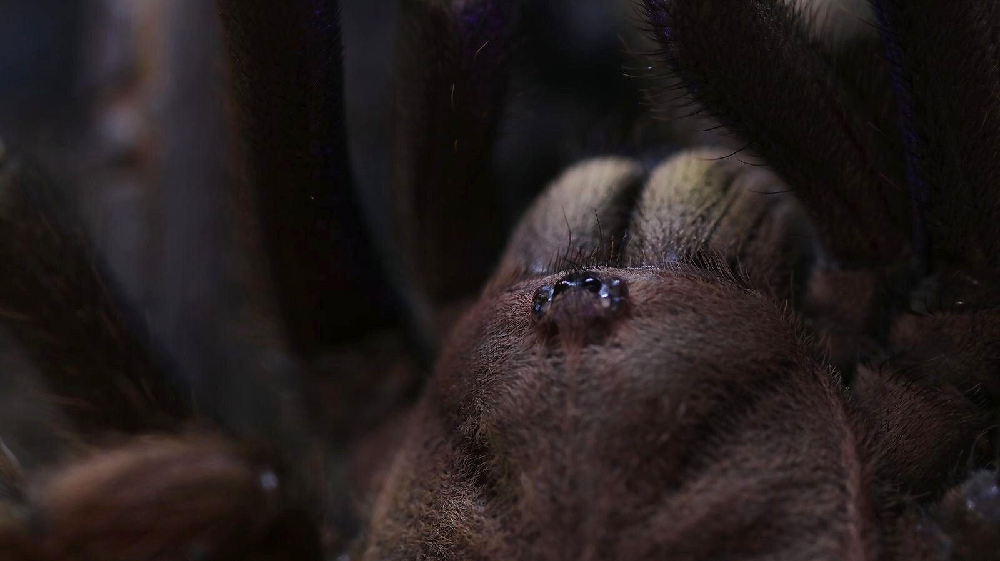
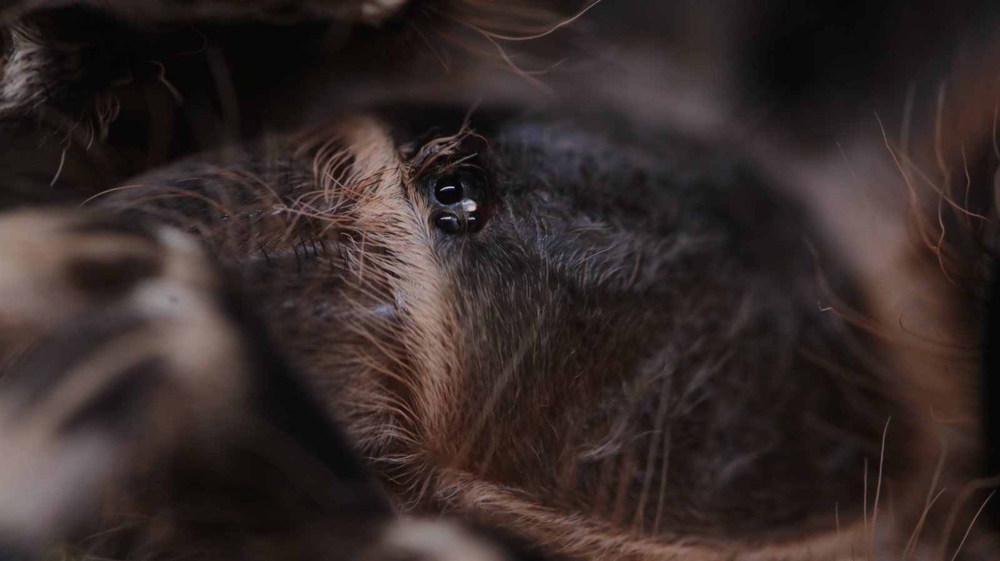
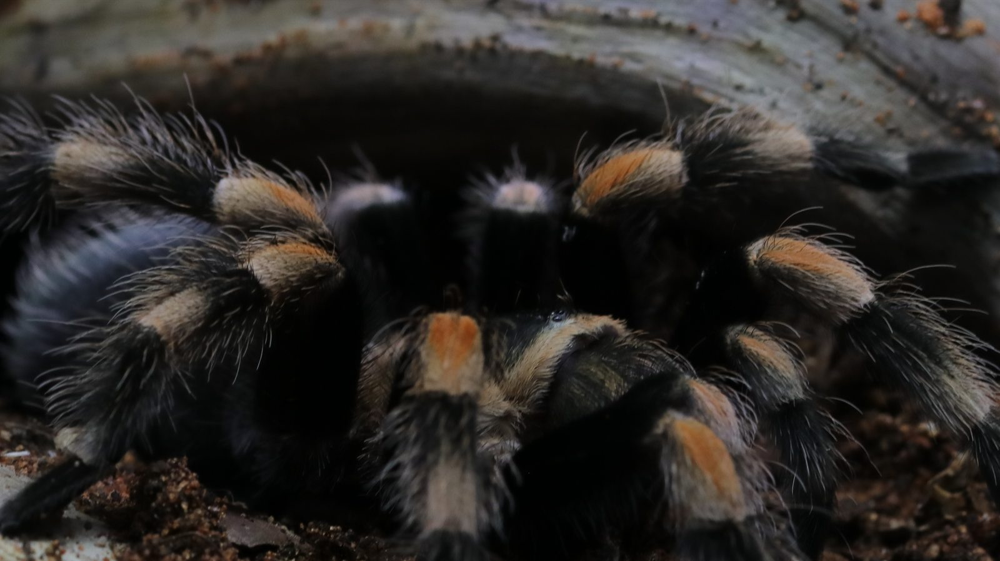
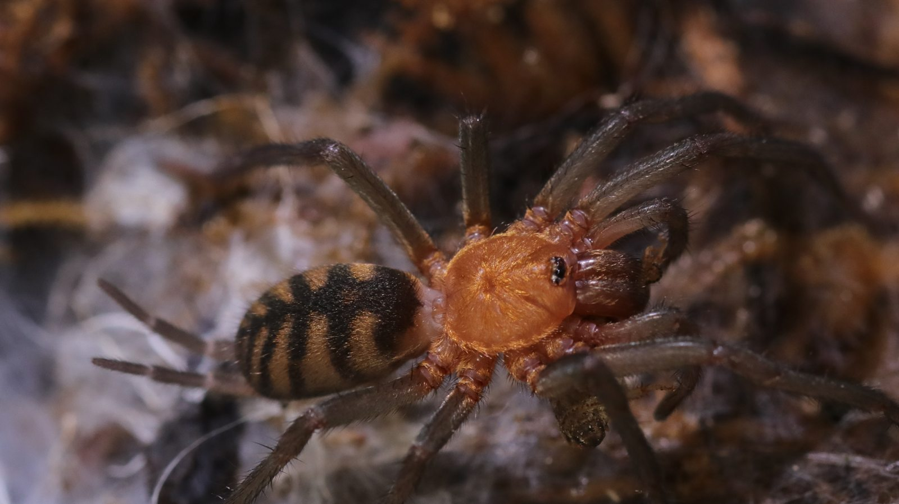
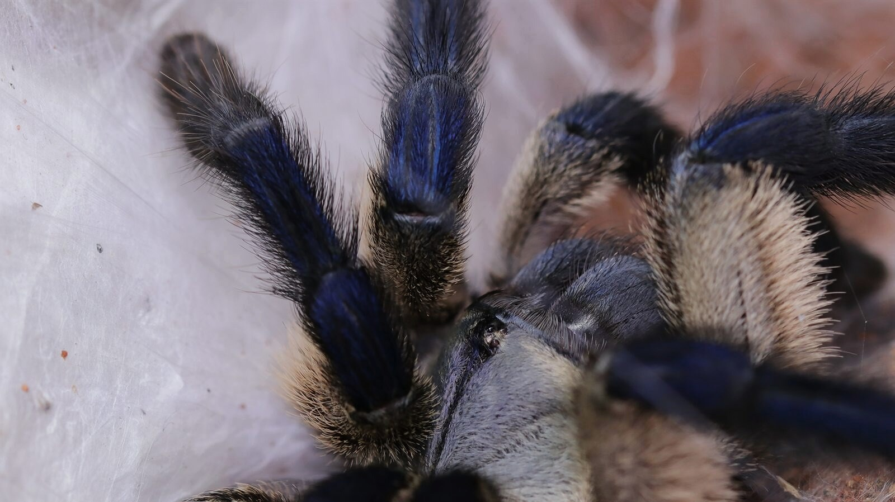
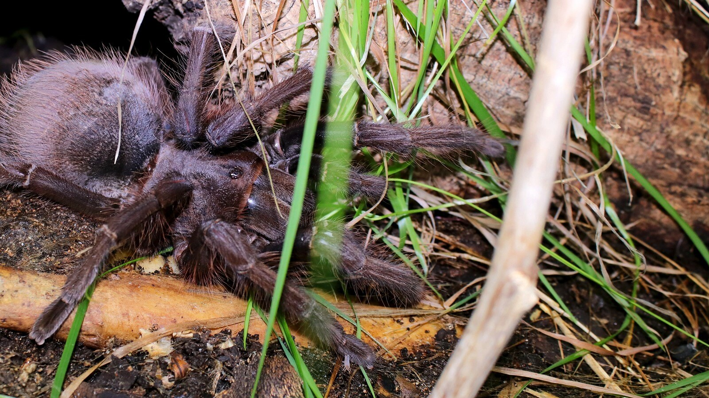
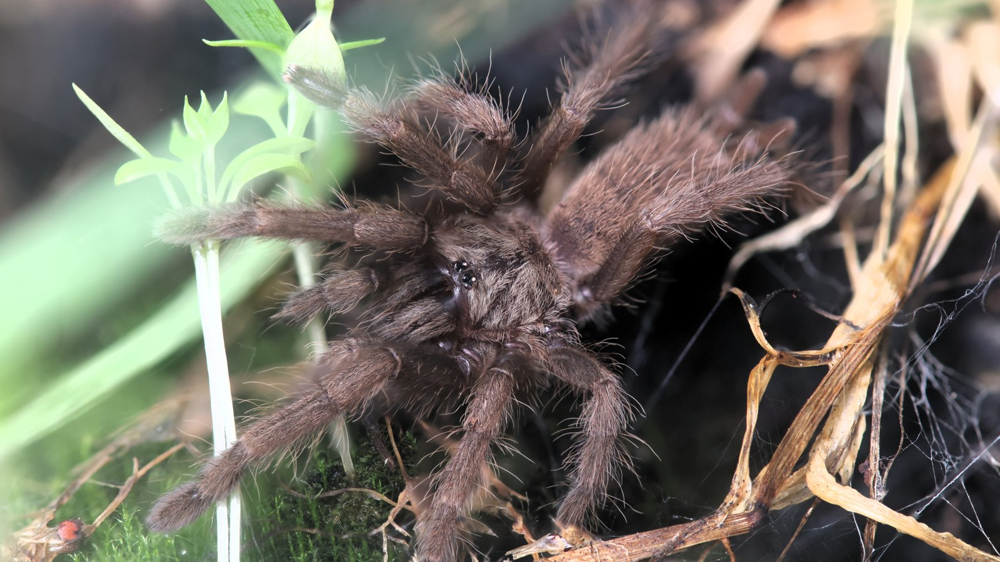
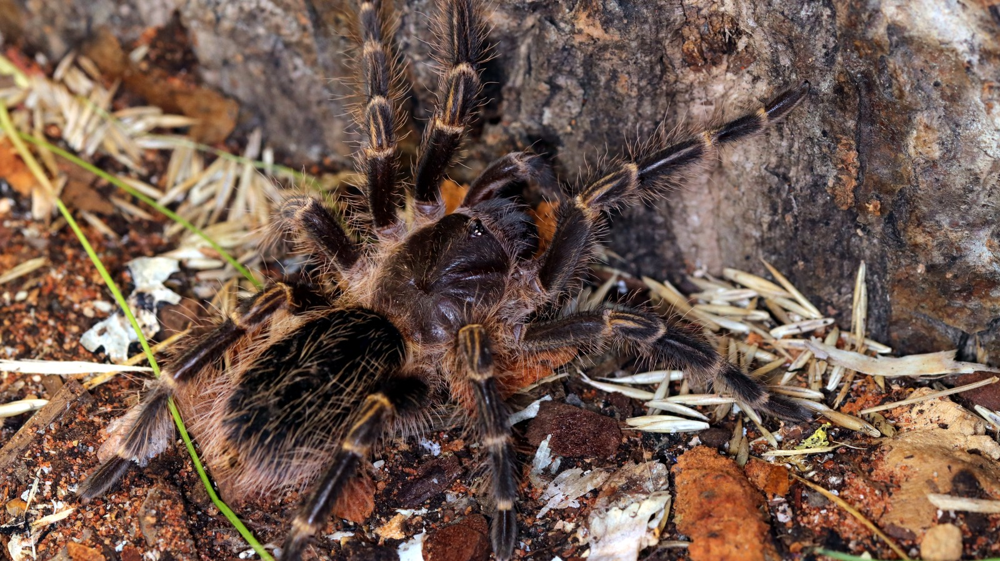
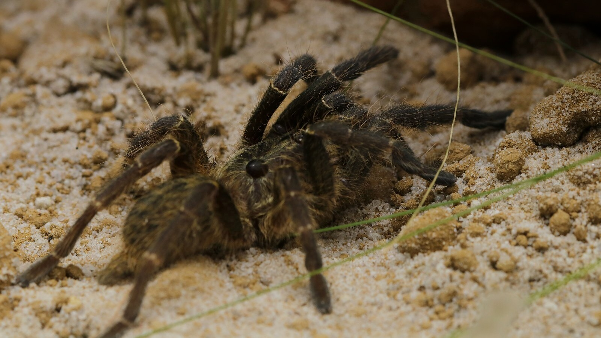
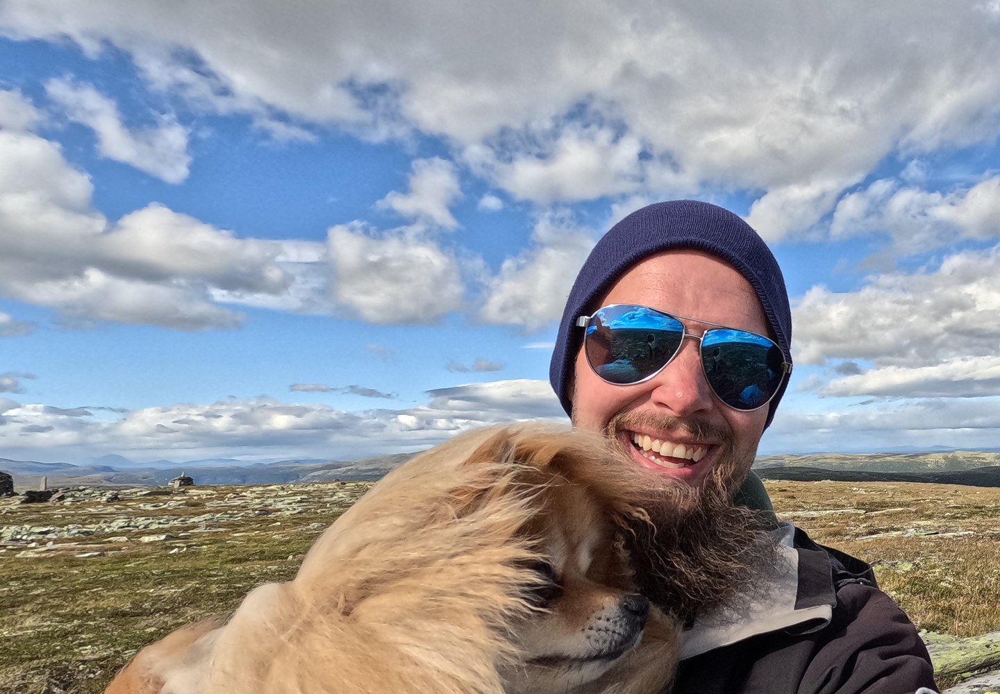

Research journal
What science is revealing.
New papers, unusual behaviour, evolution, and discoveries from across the invertebrate world — collected in a growing research journal.
Animals worth a closer look
Introvertebrates is about the animals that get flinched at, misread, and underestimated — explored through video, writing, and tools for people who find them genuinely fascinating.

In my care
Tarantulas and other spiders, an assassin bug, sun beetles, and Sonja, a Reeves’s turtle. The full collection now has its own room to breathe.







Research journal
New papers, unusual behaviour, evolution, and discoveries from across the invertebrate world — collected in a growing research journal.

Introvertebrates on YouTube
Close observations, animal behaviour, care, and the details that are easy to miss when we only glance.
Learn
Visual anatomy, remarkable biology, and careful health guidance—grounded in published sources and illustrated with animals from the collection.
See how body regions, sensory hairs, mouthparts, legs, spinnerets, and respiration fit together.
Explore anatomy 02 · BiologyElectric fields, structural blue, airborne sound, regenerated limbs, and silk as an information network.
Discover six facts 03 · CareRecognise possible warning signs, document them well, and know when qualified veterinary help is needed.
Read the keeper guideFrom the living Codex
Public-safe totals and standout measurements from the same field log used to follow feeding, molts, growth, and time in care. Missing measurements stay missing rather than becoming estimates.
Community field log
A moderated home for remarkable measurements, keeper photography, and individual animal stories. Every published claim shows the evidence level behind it.
Your own Codex data stays private unless you deliberately prepare and share a public-safe submission.
Follow the close-ups
The cinematic slideshow stays quick to browse. Below it, selected public posts and reels load directly from @introvertebrates_yt.
Live from Instagram
Play the reel, move through a carousel, read the caption, or open the post in Instagram.

Behind Introvertebrates
I’m Erlend, the keeper, photographer, writer, and builder behind Introvertebrates. The project grew from a lifelong interest in animals and a desire to replace reflexive fear with closer observation.
Here I bring together my current collection, original photography and video, research notes, and digital tools — all built around the same idea: misunderstood animals become far more remarkable when we take the time to look.
Introvertebrates Codex
A dedicated digital companion for tracking the animals in your care. The Codex is currently in development.